Atria
Charte graphique — v1
ATRIA régule la santé physique et mentale d'un équipage interstellaire et arbitre ses affectations, entièrement hors ligne, sur une carte embarquée. L'identité doit tenir sur trois supports qui n'ont rien en commun : un écran de 2,8 pouces à bord, un dossier d'ingénierie imprimé, et une projection de soutenance. Ce document fixe ce qui ne bouge pas entre les trois.
Le signe

Sur fond clair — gris de marque #393838

Sur fond sombre — blanc #FFFFFF
Deux versions, un seuil à 32 pixels
La version complète porte une orbite dont la contreforme est fine. Elle se lit jusqu'à 32 pixels et s'effondre en dessous. Sous ce seuil — favicon, en-tête du terminal, pastille d'application — on passe à la version compacte, qui abandonne l'orbite et ne garde que le disque et la lettre.
Usage
Réserver autour du signe une marge égale au rayon du disque. Rien n'y entre.
Gris de marque, blanc, ou une couleur d'état si le signe sert d'indicateur.
Le rapport reste 1:1. Pas d'étirement, pas de rotation.
Le mot ne se recompose pas dans une autre police que Teko.
Les neutres
Le gris de marque #393838 n'est pas un point isolé : c'est le palier 700 d'une échelle calculée en teinte 0 et saturation 2 %. Tous les autres paliers en descendent, ce qui garantit qu'un panneau surélevé, une bordure et un texte secondaire appartiennent à la même famille au lieu d'être choisis au jugé.
700 est le gris de marque. 000 est le blanc de marque. Les dix autres en dérivent.
Les états
Ces quatre couleurs ne sont pas décoratives et ne concurrencent jamais la marque : elles ne servent qu'à dire dans quel état se trouve une mesure. Leur convention est reprise des moniteurs patient — vert pour le nominal et le tracé cardiaque, ambre pour l'attention, rouge pour le critique. C'est un langage déjà appris par les soignants, et jamais vu sur un tableau de bord d'étudiant.
Chaque état a deux valeurs : une pour le fond clair du dossier, une pour le fond sombre des écrans. Les huit passent le contraste WCAG AA sur leur fond respectif.
| État | Fond clair | Fond sombre | Signification |
|---|---|---|---|
| Nominal | #1E7F58 | #4BD694 | Capacité au-dessus du seuil, poste couvert, tracé cardiaque |
| Attention | #9A6410 | #E8A33C | Dérive détectée, seuil approché, exposition cumulée |
| Critique | #B3311F | #F4705F | Seuil franchi, poste vacant, ordre refusé, combustion |
| Hors ligne | #6D6969 | #6D6969 | Absence de mesure — jamais confondue avec une mesure nulle |
La couleur ne porte jamais l'information seule : elle double toujours une forme, une position ou un chiffre. Un opérateur daltonien doit pouvoir lire le même état.
Typographie
Teko — titres et grandes valeurs
Capacité cognitive 0,56
Condensée, verticale, à fort caractère. Elle porte le nom, les titres du dossier, les en-têtes de section et les valeurs affichées en grand. Jamais sous 18 pixels : en dessous, ses fûts se referment et le texte devient illisible.
Inter — interface et texte courant
Négatif. Seuil requis pour le poste chirurgie : 0,70.
Neutre au point de disparaître derrière Teko, ce qui est exactement ce qu'on demande à une police d'interface. Elle porte le corps du dossier, les libellés et toute la lecture continue.
Martian Mono — mesures et code
72 bpm · RMSSD 41 ms · CO₂ 910 ppm · 24/200
Réservée aux valeurs numériques, jamais aux libellés. Sa seule justification est l'alignement : des chiffres en colonne laissent voir un écart sans avoir à le chercher. Variable sur deux axes, graisse et largeur.
Les trois sont libres et hébergées sur Google Fonts.
Application
Liste d'équipage telle qu'elle apparaît sur le terminal de bord et dans le dashboard.
Trois encodages redondants pour un seul état : la couleur, la longueur de la jauge, et le chiffre aligné en colonne.